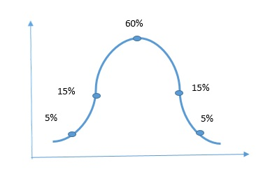

360-Degree Feedback
Evaluates employees based on feedback from peers, managers, and self-assessment.
Useful for senior employees to eliminate bias and ensure fair appraisal.
This Theory in appraisal refers to a performance management method where employees are categorized into different performance levels based on a bell-shaped distribution, essentially dividing them into "top performers," "average performers," and "low performers," with the majority falling in the middle, similar to a normal distribution curve in statistics; this method allows companies to identify and reward high achievers while also pinpointing areas for improvement in underperforming employees.
Key points about the bell curve in appraisal:
Distribution:
The bell curve visually represents a distribution where most employees fall in the middle
range (average), with a smaller percentage at the top (high performers) and bottom (low performers).
Forced ranking:
This method often forces managers to distribute performance ratings according to a predetermined percentage within each category (e.g., 20% top, 60% average, 20% low).
Evaluates employees based on feedback from peers, managers, and self-assessment.
Useful for senior employees to eliminate bias and ensure fair appraisal.
Employees are evaluated based on:
It method helps employees set clear, achievable goals with measurable outcomes, improving performance tracking
Behavior-based evaluation system ensuring fairness. BARS is a behavior-based evaluation system that rates employees based on real-world performance scenarios, ensuring fairness and accuracy.